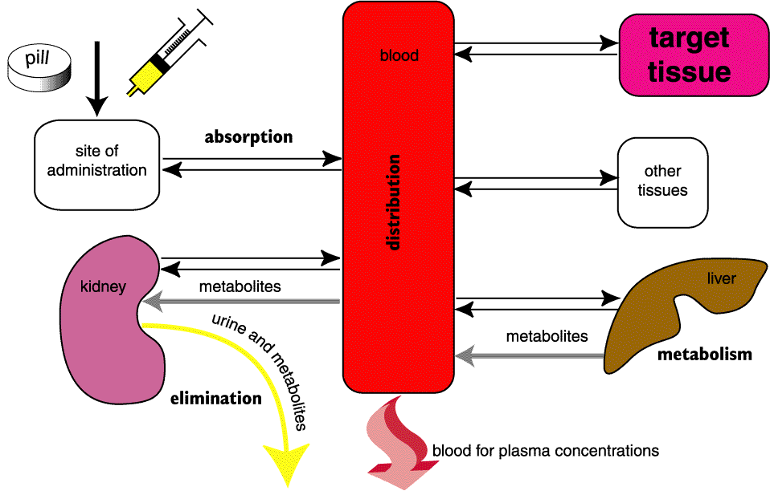

Introduction

Movement of drugs in the body. Drug concentrations are usually measured in
plasma (because it is easier) rather than the target tissue, which would be
more useful. The liver is not the only organ which metabolises drugs, but it
is probably most important for most drugs.
These processes differ between animals of different species, age, sex, health
status and size, and within an individual from time to time.
Understanding pharmacokinetics is important because unless the drug reaches
a sufficient concentration at the target cells it will not work. If the concentration
at other sites is high enough, you will get side effects. The effect is usually
proportional to plasma concentration rather than dose (absorption can be very
variable).
It is useful to think of the body as a number of compartments with barriers
between them that the drug has to cross to get from the site of administration
to the target tissue and then out of the body.
Consider a cat that has been bitten on the tail by another cat. These puncture
wounds are usually infected with Pasteurella spp. and an abscess will form
rapidly unless the bacteria are killed with an antibiotic (usually penicillin).
To kill the bacteria, there must be a sufficient concentration of penicillin
in the fluid bathing them for a sufficient length of time. It is not usually
possible to apply the penicillin directly to the bacteria; the cat is usually
given a tablet or injection which means that the penicillin has to get from
the cat's stomach or the injection site to the extracellular fluid around the
bite in the tail and stay there for long enough to kill the bacteria. In the
meantime, the cat's kidneys will be doing their best to get rid of the penicillin
into the urine.
The penicillin thus has to be absorbed from the stomach or injection site,
distributed to the tail (and other tissues) and eliminated by the kidneys (penicillin
is not metabolised to any great extent). Penicillin is a very safe drug so
the simplest way of ensuring that the bacteria are killed is to overdose the
cat. With most drugs however, overdosing will cause serious problems with side
effects: getting exactly the right concentration of drug in the target tissue
requires a knowledge of pharmacokinetics. It is largely a matter of giving
the right amount of drug by the right route for that particular animal, and
requires skill and judgement since no two animals are exactly the same.
| 3 Pharmacokinetics index |
| |
copyright
Massey University
|